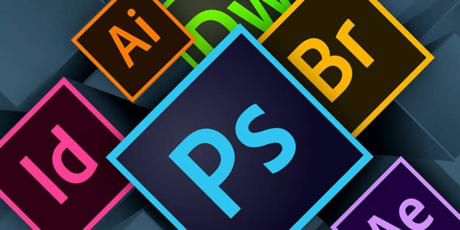

Intuitive Technology for Virtual Expression
Adobe's programs are virtual media that imitate real-life/traditional media. The programs can be used to build, draw, or layout a design on a phone, laptop, tablet, or desktop. They are virtual templates and tools for creativity. Technology allows for art without the mess of oil paint, charcoal dust or clay clods. Recently, Adobe has made its products even more user friendly and accessible than before. The Creative Cloud innovation allows users to have access to, and to share assets and projects across most of users’ devices. Adobe Creative Cloud (CC) is a suite of applications born from innovations in programing for intuitive technology, used for manifesting ideas, and an accessible place to keep them.
The purpose of programs in Adobe CC is to give users, “the world’s best creative apps — and they’re always up to date — so you can turn your brightest ideas into your greatest work across your desktop and mobile devices” (“Adobe Creative”). The artwork produced or captured in these programs, can be used across devices formatted to nearly any common American electronic device. Adobe's online suite of applications is useful in the data age. Imagery, video, typography complement each other seamlessly, and there is information appropriate for visual learners everywhere thanks to the ability to display these elements together as one cohesive composition. Composition is when an artist creates a visual piece of work by making the path the viewer’s eye will follow, traveling to different elements in the piece. To this end, Adobe makes clean, legible, scalable images and information.
These types of services appeal to a broad swaths of users. Users in the main, hobbyist, graphic designers, digital artists, photographers, and visual learners as users and an audience. Adobe helps make peoples' imaginations accessible to each other. Innovation is when a business can propose new worth or re-invention of quality in their product or service to the people who are, in some way, invested. Now to define an innovation from a business sense, as Adobe has been successful in this way with the Creative Cloud. Society and the individual evolve “when the value provided by its existing offerings becomes increasingly less attractive. Both concepts of quality (applies to present time) and innovation (concerning the future) refer to a value- dependent attribute of an entity to satisfy individual human or social needs” (Dervitsiotis). Innovation is one of the ways that tools evolve to meet people's needs. Adobe has made many revisions to their products, enough to be user friendly instead of technologically challenging. They have virtual tools that mimic the effect and name of the tools one would use in traditional media to render them and achieve the desired effect on the piece. Adobe has improved on their tools constantly in their competitive field, now to recognize their newest breakthrough-the tool of convenience and easy access for users. 
The Creative Cloud, as a file storage program, from Adobe is actually a server. A server is like a regional hard drive super-station. This can keep saved copies, projects, of Adobe Creative Cloud account holders online. There is even their own in-house site for displaying portfolios and works in progress, it is called Behance. Everything is filed and easy to find. When saved properly, this project can be picked up again by downloading and editing from anywhere at any time with internet connection. For example, one can begin a Photoshop project on one’s phone and begin editing in this application on their device. Later, one may edit by doing something like add filters or crop to the photo or project. Then pick the project up later on a tablet. Take the project into illustrator, and draw on it maybe. Then maybe someone will get back on the phone and put all assets in a layout in the program InDesign, as is its main function. Then get on a desktop and arrange all of the assets. Get on a tablet and put the InDesign layout into Photoshop, so it looks like a real booklet with a center fold and drop-shadow. Log back on to a desktop and put buttons to turn the pages, using Adobe software. The accessibility allows for versatile, organized, creative expression (thanks to Adobe with the new Creative Cloud technology). The great thing about the cloud is this: not only that users no longer have to store everything on their hard drives, but they also can start and stop with any device, wherever they are, and at any time. Ideas and inspiration do not usually come rushing over ones conscious being from the thrill of sitting at the screen of a desktop. Ideas and inspiration are spontaneous and, having meaningful experiences which come from being wherever “out there” is to an individual. Adobe’s Creative Cloud lets its users capture their moments of inspiration wherever they are with whatever device they have access to. Now that the uses Adobe CC has been explained, the innovators and science behind the computer are going to be described in subsequence.
An innovation for Adobe is the new capability to run asynchronous tasks. Before this, computer programmers experienced complications with what is called a bug. A bug is an error in the coding or codex sequence. For all computer information there is a long series of ones and zeros, in very specific patterns. Computers do not write their own codes; Computer scientists do write computer code. Cole interviews Williams about a bug, which took 10 years to work out. Updates in this edition make the user need not add on applications. This is what it means when a program does the work in house, the purpose of which is to keep its consumers from out sourcing to those companies making the add-on. The synchronizing software has now been developed for multiple operating systems. (Cole, Clem, and Russell William). Technology is a very competitive field. Photoshop is a global necessity for users who want to communicate visually. It is the way people express their creative versions of the reality for others As it was previously common knowledge that Adobe’s software had errors, bugs, when used with Windows operating system. This new breakthrough in coding has made the users able to synchronize their projects across all devices, as explained above. With the help of experienced, intelligent computer scientists with mathematic skill, innovation has overcome this obstacle. In order to use your Adobe Creative Cloud applications, the user logs in to his or her online account, and download the desired programs onto the device being used. Apple products such as iPhone, iPad, and iMac are not necessary for the use of adobe creative cloud. For example, one could have a cheap Metro PCS Life’s Good phone, windows surface tablet, and iMac, all of the programs and the cloud will work seamlessly. Now that we know about the scientists who made adobe Creative cloud possible, now to look at an innovation inside one of adobe’s programs and who is affected.
Adobe’s innovations have been put to other uses as well. Adobe’s program Flash (more recently known as Adobe Animate) has been the vehicle for the media used in the Visual Reinforcement Audiometry, a standard children's hearing test. The procedure of the test is that The Doctor puts a young child in a room to observe the reaction or lack thereof, to visual and auditory stimuli. The objective of the test is to see if the children’s hearing or sight are impaired (Atherton 1). The reason why Adobe’s innovation was important to this medical test is that they require a versatile file type. Adobe has made technological advances that allow for infinite image scaling. This is useful because the Audiology Department uses screen sizes that vary. (Atherton 2). This is a practical choice because Flash animations are vectored. Vector shapes and images can be scaled infinitely without losing data, becoming pixelated, or looking blurry. Graphic artists and animators have to draw everything that is in an animation. One of the goals in this is clear communication between the artist or designer and the audience or viewer. Communication is not clear when images become distorted from what its creator intended. Flash is a great convenience when the same animation will likely be viewed on different size screens. These programs in the Adobe Creative Cloud suite have a broad range of purposes as well, of which this is one example. Flash can export multiple file types. That means it will work on projectors for Windows or Mac, although Flash files will not play on mobile devices. This is why when someone tries to open some animations, games or videos on their phones, a message about needing to updated adobe flash player will be displayed. Then when that person clicks on the update a message will display with information about the device not being able to update. This means that the creator of the file saved as an .fla file, instead of a .gif, or other compatible file. There is an established Flash use, moving on to another one of Adobe’s program’s recent improvements for users. Lastly, to drive the points home about the differences that Adobe’s innovations have made a difference in the way its applications are used.
Adobe Creative Cloud is a suite of applications for graphic communication professionals,
students, and artists. From scientific innovations in complex computer programing, applications,
accounts, and projects are easily accessible when inspiration strikes. Adobe uses intuitive
technology that allows its users to build projects seamlessly across all devices. This innovation has changed the way that people create visually communicative pieces of work, and the way that
viewers experience it.

Works Cited
"Adobe Creative Cloud." Software and Services for Creative Professionals. Adobe Systems
Incorporated, 2016. Web. 19 Apr. 2016.
Atherton, Steve. "Visual Reinforcement Audiometry: An Adobe Flash Based Approach."
Journal Of Visual Communication In Medicine 33.3 (2010): 110-112. Health Source:
Nursing/Academic Edition. Web. 7 April. 2016.
Cole, Clem, and Russell William. "Photoshop Scalability: Keeping It Simple." Communications
Of The ACM 53.10 (2010): 32-38. Business Source Elite. Web. 7 April. 2016.
Dervitsiotis, Kostas N. "A Framework For The Assessment Of An Organisation's Innovation
Excellence." Total Quality Management & Business Excellence 21.9 (2010): 903-918.
Business Source Elite. Web. 7 April. 2016.